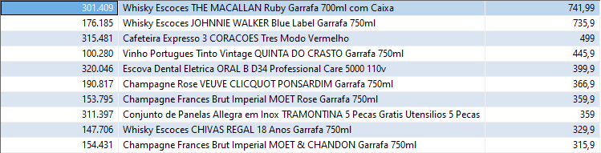
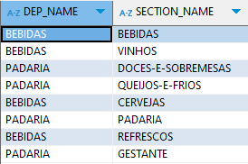
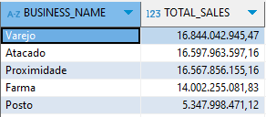

Consultas SQL
What are the 10 most expensive products in the company?
para responder essa pergunta utilizei a seguinte query:
SELECT
PRODUCT_COD,
PRODUCT_NAME,
PRODUCT_VAL
FROM
data_product
ORDER BY
PRODUCT_VAL DESC
LIMIT 10;
Resultado da consulta

What sections do the 'BEBIDAS' and 'PADARIA' departments have?
para responder essa pergunta utilizei a seguinte query:
SELECT
DEP_NAME,
SECTION_NAME
FROM
data_product dp
WHERE
DEP_NAME IN ('BEBIDAS', 'PADARIA')
GROUP BY
DEP_NAME, SECTION_NAME;
bebidas, vinhos, cervejas e refrescos. Já em PADARIA, doces-e-sobremesas, queijos-e-frios, padaria e gestante.
OBS: Vale ressaltar as sessões em destaque, sessão de gestante no departamento padaria, não parece fazer sentido. E a sessão com o mesmo nome do departamento, vale entender a regra do negócio.
Resultado da consulta

What was the total sale of products (in $) of each Business Area in the first quarter of 2019?
Nesta query foi levado em consideração que para encontrar o valor total de vendas, multiplicamos o valor pela quantidade. Mas se o campo valor, já está refletido isso. A query mudaria apenas o SUM no SELECT para SUM(ps.SALES_VALUE)
SELECT
sc.BUSINESS_NAME,
SUM(ps.SALES_QTY * ps.SALES_VALUE) AS TOTAL_SALES
FROM
data_product_sales ps
JOIN
data_store_cad sc ON ps.STORE_CODE = sc.STORE_CODE
WHERE
ps.DATE >= '2019-01-01' AND ps.DATE < '2019-04-01'
GROUP BY
sc.BUSINESS_NAME
ORDER BY
TOTAL_SALES DESC;
Resultado da consulta

Arquitetura do Projeto
O projeto foi organizado em quatro arquivos principais, utilizando conceitos de Programação Orientada a Objetos para maior modularidade:
Classe Database:
- Responsável por gerenciar a conexão com o banco de dados MySQL.
- A função retrieve_data permite que a consulta seja feita de maneira flexível, com base em parâmetros fornecidos (ex.: product_code, store_code e intervalo de date).
Abstração com POO:
- A Programação Orientada a Objetos foi utilizada para encapsular a lógica da conexão e consulta dentro da classe Database. Isso facilita a reutilização e modularização do código em diferentes partes do projeto.
- A função criada foi testada e implementada no case_1.
database.py: Classe responsável pela conexão com o banco de dados MySQL e pela execução de consultas SQL.
import mysql.connector
import pandas as pd
from mysql.connector import Error
class Database:
def __init__(self, host, port, user, password, database):
self.host = host
self.port = port
self.user = user
self.password = password
self.database = database
self.cnx = None
def connect(self):
"""Estabelece a conexão com o banco de dados."""
try:
self.cnx = mysql.connector.connect(
host=self.host,
port=self.port,
user=self.user,
password=self.password,
database=self.database
)
print("Connection ok.")
except Error as e:
print(f"Error: {e}")
def close(self):
"""Fecha a conexão com o banco de dados."""
if self.cnx.is_connected():
self.cnx.close()
print("Connection closed.")
def retrieve_data(self, product_code=None, store_code=None, date=None):
"""Recupera dados da tabela data_product_sales com base nos parâmetros fornecidos."""
try:
if self.cnx is None or not self.cnx.is_connected():
self.connect()
query = "SELECT * FROM data_product_sales WHERE 1=1" # Começar a consulta com um true
params = []
if product_code is not None:
query += " AND product_code = %s"
params.append(product_code)
if store_code is not None:
query += " AND store_code = %s"
params.append(store_code)
if date is not None and len(date) == 2:
query += " AND date BETWEEN %s AND %s"
params.extend(date)
# Executa a consulta
with self.cnx.cursor() as cur:
cur.execute(query, params)
results = cur.fetchall()
# Cria um DataFrame com os resultados
df = pd.DataFrame(results, columns=[i[0] for i in cur.description])
return df
except Error as e:
print(f"Error: {e}")
return pd.DataFrame() # Retorna um DataFrame vazio em caso de erro
def execute_query(self, query):
"""Executa uma consulta SQL e retorna um DataFrame."""
if self.cnx is None or not self.cnx.is_connected():
self.connect()
try:
df = pd.read_sql(query, self.cnx)
return df
except Error as e:
print(f"Error executing query: {e}")
return pd.DataFrame() # Retorna um DataFrame vazio em caso de erro
Case 1: Verifica a função de recuperação de dados da tabela data_product_sales.
Utiliza a classe Database para conexão e faz uso da função retrieve_data para realizar consultar com filtros no banco.
import os
from dotenv import load_dotenv
from database import Database
load_dotenv()
def test_retrieve_data():
db = Database(
host=os.getenv('DB_HOST'),
port=int(os.getenv('DB_PORT')),
user=os.getenv('DB_USER'),
password=os.getenv('DB_PASSWORD'),
database=os.getenv('DB_NAME')
)
# Teste
my_data = db.retrieve_data(product_code=18, store_code=1, date=['2019-01-01', '2019-01-31'])
print("Valid parameters")
print(my_data)
db.close()
if __name__ == "__main__":
test_retrieve_data()
Case 2: Processamento de Consultas e Cálculo do Ticket Médio (TM)
Este caso mostra como processar dados de vendas e calcular o Ticket Médio (TM) usando a classe Database e o pandas para manipulação dos dados. O código foi estruturado da seguinte maneira:
import pandas as pd
from database import Database
import os
from dotenv import load_dotenv
load_dotenv()
class QueryProcessor:
def __init__(self, db: Database):
self.db = db
def fetch_stores(self):
query = """
SELECT
STORE_CODE,
STORE_NAME,
BUSINESS_NAME,
BUSINESS_CODE
FROM data_store_cad
"""
return self.db.execute_query(query)
def fetch_sales(self, start_date, end_date):
query = f"""
SELECT
STORE_CODE,
DATE,
SALES_VALUE,
SALES_QTY
FROM data_store_sales
WHERE DATE BETWEEN '{start_date}' AND '{end_date}'
"""
return self.db.execute_query(query)
def process_queries(self, start_date, end_date):
stores_df = self.fetch_stores()
sales_df = self.fetch_sales(start_date, end_date)
merged_df = pd.merge(stores_df, sales_df, on='STORE_CODE', how='left')
average_sales_df = merged_df.groupby(['STORE_NAME', 'BUSINESS_NAME']).agg(
Average_Sales_Value=('SALES_VALUE', 'sum'),
Total_Sales_Qty=('SALES_QTY', 'sum')
).reset_index()
# Calcula a média e arredonda
average_sales_df['TM'] = average_sales_df.apply(
lambda row: round(row['Average_Sales_Value'] / row['Total_Sales_Qty'], 2) if row['Total_Sales_Qty'] > 0 else 0,
axis=1
)
# Renomeia as colunas conforme o necessário
average_sales_df = average_sales_df[['STORE_NAME', 'BUSINESS_NAME', 'TM']]
average_sales_df.columns = ['Loja', 'Categoria', 'TM']
return average_sales_df
if __name__ == "__main__":
# Crie uma instância da classe Database com as credenciais
db = Database(
host=os.getenv('DB_HOST'),
port=int(os.getenv('DB_PORT')),
user=os.getenv('DB_USER'),
password=os.getenv('DB_PASSWORD'),
database=os.getenv('DB_NAME')
)
# Crie um processador de consultas e processa as consultas
processor = QueryProcessor(db)
result_df = processor.process_queries('2019-10-01', '2019-12-31')
# Exibe o resultado no formato desejado
print(result_df.to_string(index=False))
# Fecha a conexão
db.close()
Case 3: Visualização de Filmes por Gênero e Ano
Este exemplo mostra como criar uma visualização de filmes, categorizados por gênero, ao longo dos anos. Utiliza a biblioteca matplotlib para gerar gráficos de barras empilhadas.
Utilizei a biblioteca matplotlib, geralmente utilizo ela para fazer análises e plot de gráficos, junto ao pandas, dito isso, foi uma escolha natural.
import matplotlib.pyplot as plt
import pandas as pd
from database import Database
import os
from dotenv import load_dotenv
load_dotenv()
class MovieVisualizer:
def __init__(self, db):
self.db = db
def fetch_movies_data(self):
query = "SELECT Genre, Votes, Year FROM IMDB_movies"
movies_df = self.db.execute_query(query)
return movies_df
def plot_genre_distribution_by_year(self):
movies_df = self.fetch_movies_data()
# Quebrar os gêneros em linhas separadas
movies_df['Genre'] = movies_df['Genre'].str.split(',')
movies_exploded = movies_df.explode('Genre')
# Contar a quantidade de filmes por gênero e ano
genre_year_counts = movies_exploded.groupby(['Year', 'Genre']).size().unstack(fill_value=0)
# Criar um gráfico de barras empilhadas
genre_year_counts.plot(kind='bar', stacked=True, figsize=(12, 6), colormap='tab20')
# Adicionar títulos e rótulos
plt.title('Distribuição de Filmes por Gênero ao Longo dos Anos', fontsize=16)
plt.xlabel('Ano', fontsize=14)
plt.ylabel('Número de Filmes', fontsize=14)
plt.xticks(rotation=45)
plt.tight_layout() # Ajusta o layout para evitar sobreposição
plt.show()
if __name__ == "__main__":
# Conexão ao banco de dados e execução do visualizador
db = Database(
host=os.getenv('DB_HOST'),
port=int(os.getenv('DB_PORT')),
user=os.getenv('DB_USER'),
password=os.getenv('DB_PASSWORD'),
database=os.getenv('DB_NAME')
)
visualizer = MovieVisualizer(db)
visualizer.plot_genre_distribution_by_year()
db.close()